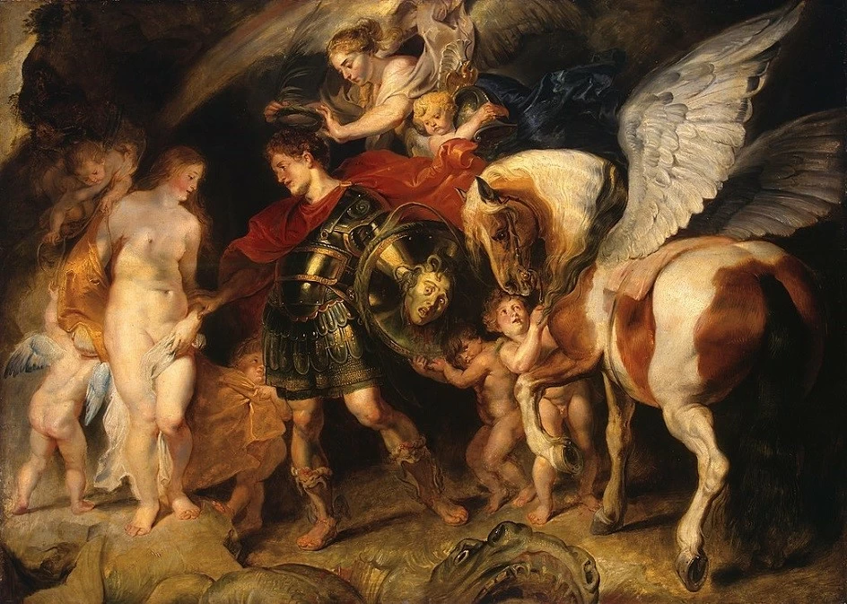
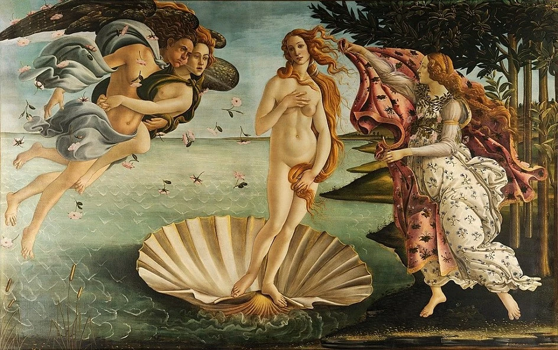
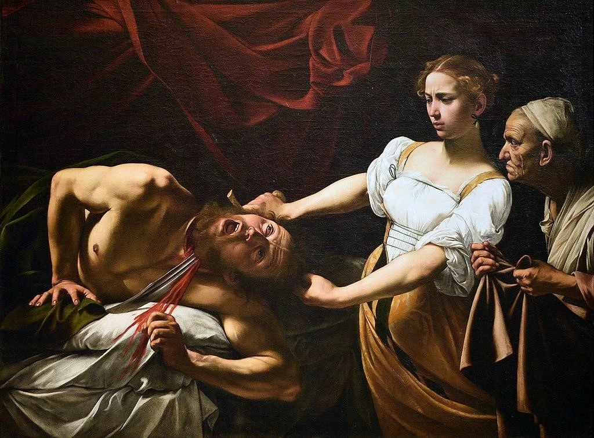
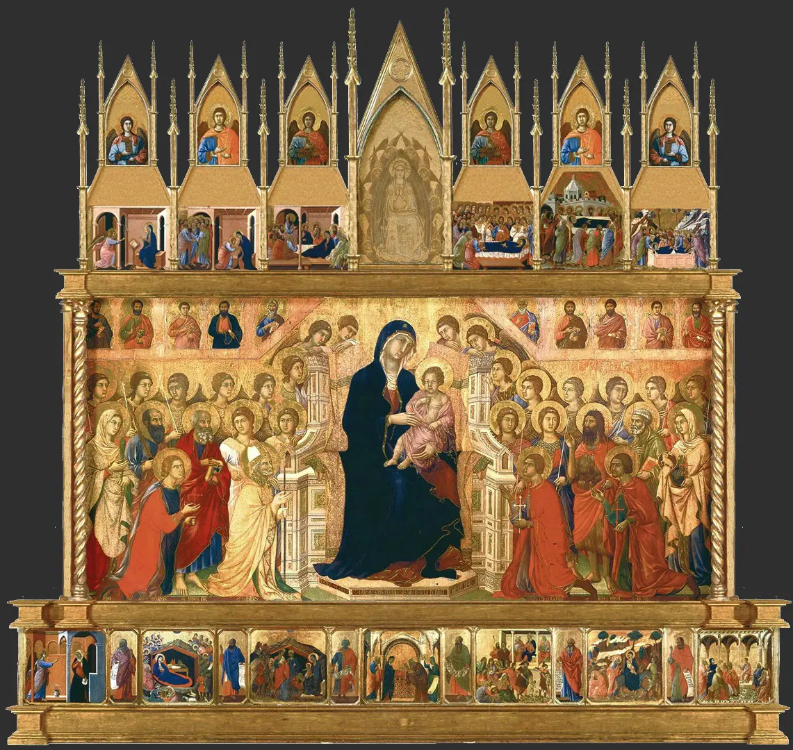
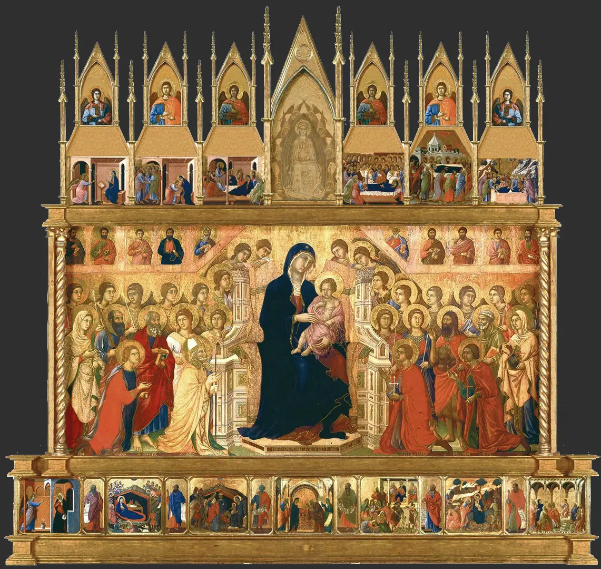
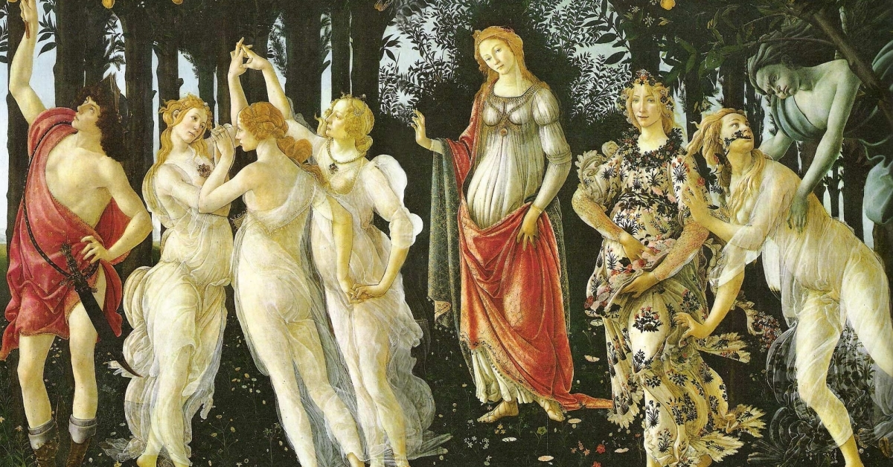
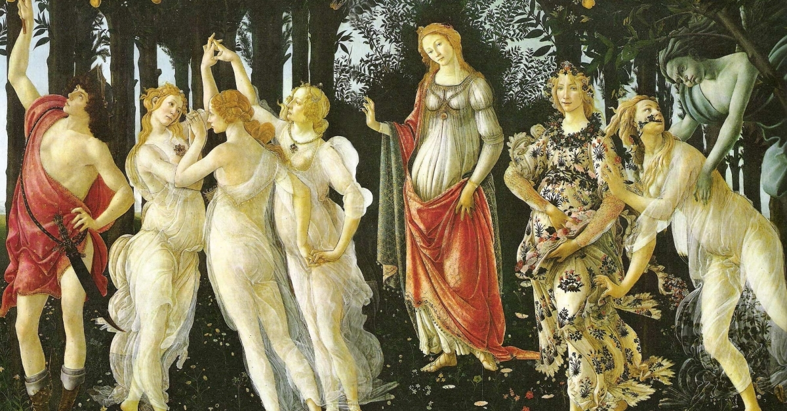

Античность
Гармония формы и идеалы красоты, зарождение европейской культуры.
Знаковые мастера
- Фидий
- Поликлет
- Аполлодор



Гармония формы и идеалы красоты, зарождение европейской культуры.
Символизм, духовность, витражи и иконопись — искусство ради веры.
 


Гуманизм, линейная перспектива и гении Леонардо, Рафаэля и Микеланджело.
 

Драматизм, контраст света и тени, эмоциональные композиции.
Строгость формы, апелляция к античным идеалам и гармонии.